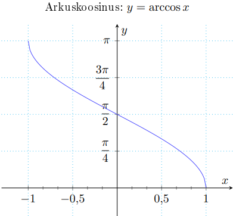
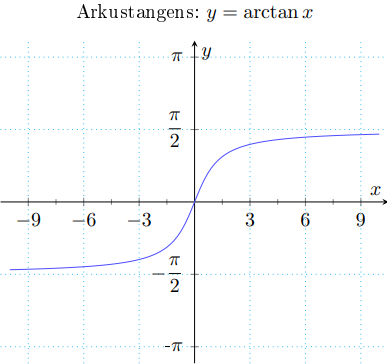
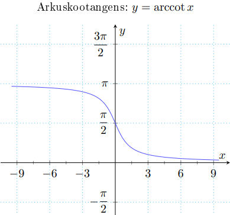

Arkusfunktsioonid
Arkussiinus
Arkusfunktsioonid on vastavate
trigonomeetriliste funktsioonide pöördfunktsioonid sobivas piirkonnas.
Arkussiinus f(x) = arcsin x.
• X = [−1, 1], Y = [(-π / 2), (π / 2)]
• paaritu
• tõkestatud
• üksühene
• f**−1(x) = sin x, x ∈ [(-π / 2), (π / 2)]
Arkuskoosinus f(x) = arccos x
• X = [−1, 1], Y = [0, π]
• tõkestatud
• üksühene
• f**−1(x) = cos x, x ∈ [0, π]

Arkustangens f(x) = arctan x
• X = R, Y = ((-π / 2), (π / 2))
• paaritu
• tõkestatud
• üksühene
• f**−1(x) = tan x, x ∈ [(-π / 2), (π / 2)]

Arkuskootangens f(x) = arccot x
• X = R, Y = (0, π)
• üksühene
• f−1(x) = cot x, x ∈ [0, π]
